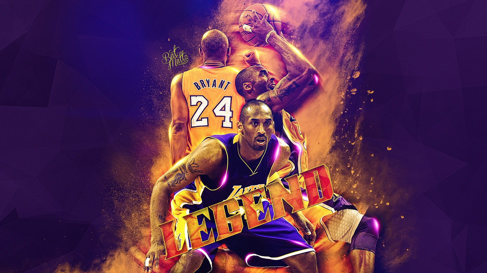

Born in 1978 in Philadelphia, Pennsylvania, Kobe Bryant spent his early years in Italy and joined the NBA straight out of high school. A dominant scorer, Bryant won five NBA championships and the 2008 MVP Award with the Los Angeles Lakers. Although later seasons were marred by injuries, he surpassed Michael Jordan for third place on the NBA all-time scoring list in December 2014. The following year, he announced his plan to retire after the 2015-16 NBA season.
Early Life
Kobe Bean Bryant was born on August 23, 1978, in Philadelphia, Pennsylvania. Named after a Japanese steakhouse, Kobe Bryant is the son of former NBA player Joe "Jellybean" Bryant.
In 1984, after ending his NBA career, the elder Bryant took the family to Italy, where he played in the Italian League. Growing up in Italy alongside two athletic older sisters, Shaya and Sharia, Kobe was an avid player of both basketball and soccer. When the family returned to Philadelphia in 1991, Bryant joined the Lower Merion High School basketball team, leading it to the state championships four years in a row. With an eye on the NBA, he also started working out with the 76ers.
"I, Kobe Bryant...have decided to skip college and take my talents to the NBA."
Though he boasted good grades and high SAT scores, Bryant decided to go straight to the NBA from high school. He was selected by the Charlotte Hornets with the 13th overall pick of the 1996 NBA draft, and was subsequently traded to the Los Angeles Lakers.
NBA Career
In his second season as guard, with the Lakers, Bryant was voted a starter for the 1998 All-Star Game, becoming at 19 the youngest All-Star in NBA history. He then teamed up with superstar center Shaquille O'Neal to win three consecutive NBA championships, and was voted first-team all-NBA from 2002-04. He also inked multi-year endorsement deals with Adidas, Sprite and other top sponsors.
 "If you're afraid to fail, then you're probably going to fail."Although the Lakers struggled after O'Neal left in 2004, Bryant performed brilliantly. He scored 81 points against the Toronto Raptors in January 2006, the second-highest single-game mark in NBA history, and led the league in scoring that year and the next.
In 2008, Bryant was named Most Valuable Player and carried his team to the NBA Finals, where they lost to the Boston Celtics. In the 2009 NBA Finals, the Lakers beat the Orlando Magic to win the championship. Shortly afterward, Bryant was part of the memorial service to honor friend and music superstar Michael Jackson. The following year, the Lakers won their second straight title by defeating the Celtics.
Bryant played on both the 2008 and 2012 U.S. Olympic teams, winning consecutive gold medals with teammates Kevin Durant, LeBron James and Carmelo Anthony, among several other top players.
After suffering a torn Achilles tendon in April 2013, Bryant worked hard to return to the court before fracturing his knee just six games into the 2013-14 season. The veteran All-Star surpassed Michael Jordan for third all-time on the NBA scoring list in December 2014, but his season ended due to injury for the third straight year when he sustained a torn rotator cuff in January 2015.
Although Bryant returned in time for the start of the 2015-16 NBA season, he personally struggled alongside his young Lakers teammates. In November 2015, he announced that he would retire at the end of the season. "This season is all I have left to give," he wrote on The Players' Tribune website. "My heart can take the pounding. My mind can handle the grind but my body knows it's time to say goodbye."
The announcement drew a strong reaction, particularly from NBA Commissioner Adam Silver. "With 17 NBA All-Star selections, an NBA MVP, five NBA championships with the Lakers, two Olympic gold medals and a relentless work ethic, Kobe Bryant is one of the greatest players in the history of our game," Silver said in a statement. "Whether competing in the finals or hoisting jump shots after midnight in an empty gym, Kobe has an unconditional love for the game."
On April 13, 2016, Bryant dazzled a sold-out crowd at the Staples Center and fans everywhere in the last game of his career, scoring 60 points and leading the Lakers to a win against the Utah Jazz. It was Bryant’s sixth 60-point game of his career.
After the game, Bryant spoke to the crowd. "I can't believe how fast 20 years went by . . .,” he said. "This is absolutely crazy . . . and to be standing at center court with you guys, my teammates behind me, appreciating the journey that we've been on — we've been through our ups, been through our downs. I think the most important part is we all stayed together throughout."
An all-star lineup of Laker icons also payed tribute to Bryant including Shaquille O’Neal, Phil Jackson, Pau Gasol, Derek Fisher, Lamar Odom and Magic Johnson.
“We are here to celebrate greatness for 20 years,” Johnson said. “Excellence for 20 years. Kobe Bryant has never cheated the game, never cheated us as the fans. He has played through injury, he has played hurt. And we have five championship banners to show for it.
Personal Life
Bryant married 19-year-old Vanessa Laine in April 2001. In July 2003, he was charged with one count of sexual assault on a 19-year-old female hotel worker in Colorado. Bryant said he was guilty of adultery, but innocent of the rape charge. The case against Bryant was dismissed in 2004, and he settled the civil lawsuit filed by the hotel worker against him out of court.
Among his philanthropic endeavors, the basketball great has partnered with the non-profit After-School All-Stars as part of the Kobe & Vanessa Bryant Family Foundation. He also runs an annual summer camp called the Kobe Basketball Academy.
To show some photographs of: Kobe Bryant